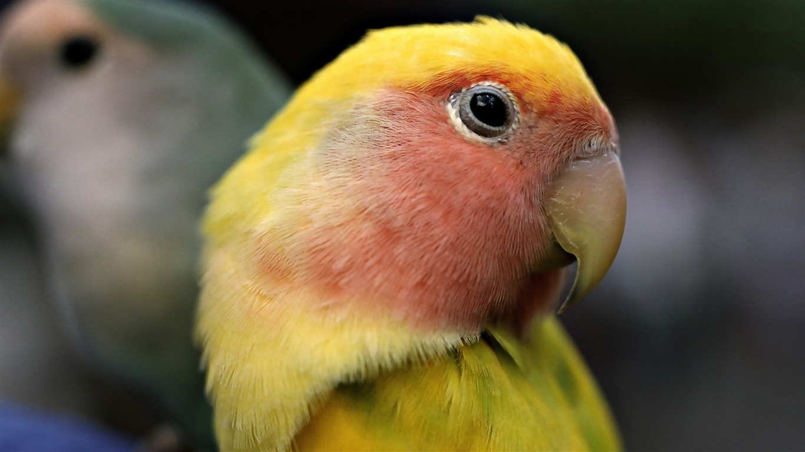

Resgate
O crescimento demográfico e a expansão das cidades tem feito com que os animais percam espaço
e acabem ocupando os centros urbanos. Esta ocupação inapropriada, inevitavelmente,
coloca estes animais em situações de vulnerabilidade e todos os dias animais silvestres
são encontrados em situação de risco, feridos ou doentes.